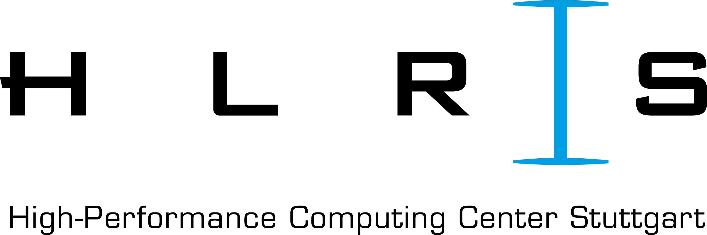

Project participants
Institute for software technology - german aerospace center (DLR-SC)
|
|
The tasks of the Institute for software technology at the german aerospace center is research and development in the field of innovative software engineering technologies and the provision and application of this software know-how. The department "High-performance computing" (SC-HPC) develops parallel libraries in the field of numerical linear algebra and efficient data management and analysis on HPC systems. In particular, SC develops novel alorithms for the efficient, highly scalable management of dynamic adaptive grids wich are used in various applications within and used outside of DLR. Role in the project: Project management, expertise and software for highly scalable dynamic adaptive grid management, software: t8code |
Institute of Geometry and Applied Mathematics - RWTH Aachen (IGPM)
|
|
The Institute of Geometry and Applied Mathematics (IGPM) of the RWTH Aachen trains students of mathematics, computer science, natural- and engineering sciences in numerical mathematics. In research, it represents a variety of mathematical numerical topics, from analytical foundations to applications in engineering and natural sciences. The IGPM is involved in a multiplicity interdisciplinary projects. The working group ----- developed the adaptive, parallel DG solver Multiwave. Role in the project: Many years of experience in development, analysis and implementation of multiscale-based adaptation strategies, software: Multiwave |
Numerical Simulation - University of Cologne
|
The chair Numerical Simulation at the Department of Mathematics/computer science at the University of Cologne deals with the mathematical analysis, the algorithmic construction, and the efficient implementation of numerical methods on high-performance computers. Special focus in research are problems in engineering and natural sciences, in particular computer-aided fluid dynamics applications in the field of compressible flows and plasma physics. ----- Trixi.jl Role in the project: Many years of experience in development, analysis and implementation of high-order DG methods in massively parallel Simulation software for the numerical solution of all kinds of flow problems, software: Trixi.jl |
Hydrotec
|
Hydrotec has been an owner-managed company since it was founded in 1981 and has currently around 65 employees in the offices in Aachen, Essen, and Münster. The focus is on the processing of water management tasks in the areas of river management and urban drainage, as well as in the field of precautionary flood protection. Hydrotec's range of services includes water provision management issues as well as development and sales of water management software. Role in the project: Expertise in commercial application in the field of shallow water simulations, the within the project developed exascale-capable adaptive meshes and solver techniques should be built into the HydroAS code, software: HydroAS |
Jülich Supercomputing Centre - Forschungszentrum Jülich (JSC)
|
The Jülich Supercomputing Centre controlls supercomputers of the highest performance class in Europe. Simulation and Data Laboratories (SDLs) for climate research and terrestrial systems support the Research work in the field of earth system modelling. The SDLs have many years of experience in development, porting, and optimization of the components and algorithms of earth system models as well as in the support and implementation of large simulations on different HPC architectures. The SDLs form an interface to other JSC departments such as mathematical methods, performance analysis, or accelerator technologies. Role in the project: support the project's HPC activities, in particular the porting, performance analysis and optimization of the code to the Jülich supercomputer JUWELS and JURECA-DC as well as a future exascale system of the EuroHPC initiative, support for GPU porting and heterogeneous issues arithmetic, as developers of MPTRAC and SERGHEI, the SDLs develops two application codes that will be expanded using the AMR technology, software: MPTRAC, SERGHEI |
Institute of atmospheric physics - german aerospace center (DLR-PA)
|
The Institute of Atmospheric Physics of the German Aerospace Center (DLR-PA) investigates the dynamics, physics and chemistry of the global atmosphere. The department "Earth System Modeling" (DLR-PA-ESM) applies simulation methods and complements them with observational data to increase our understanding of the movement and the chemical composition of atmospheric air masses. DLR-PA-ESM is significantly involved in the ongoing development of the "Modular Earth Submodel System (MESSy)", which currently consists of 22 national and international research groups. Role in the project: Expertise in chemistry-climate modelling as part of a broad user community in Earth system modelling, contributes know-how about scalable heterogeneous FORTRAN codes and will work on the development of an exascale-capable global dynamic adaptive chemistry-climate model, software: MESSy |
High Performance Computing Center Stuttgart (HLRS) (associated partner)
|  |
The High Performance Computing Center Stuttgart (HLRS) is a research institute and a supercomputer center affiliated to the University of Stuttgart, Germany. It operates one of the fastest supercomputers in the world and offers access to supercomputers for universities and research institutions as well as industrial partners. Role in the project: Extensive experience in research software engineering for large-scale high-performance computing, support for the integration of Trixi.jl in the MESSy framework |